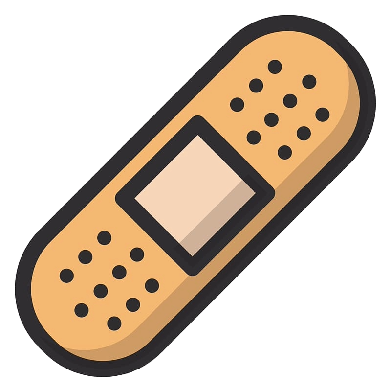
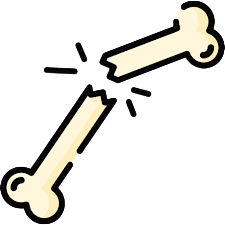

We started Career-Path Bundles after noticing how limited current first aid kits are. The same materials won't work for the same professions or people. An artist, doctor, patient, or athlete don’t have the same needs or challenges. We don’t believe in the one-size-fits-all narrative in this industry, so we built recovery kits built for you.

Stop settling for generic bandages that fail when you need them most. Get curated recovery kits built for your craft's unique demands.

Injuries can ruin a career. The wrong kit only makes things worse. Career-Path Bundles focuses on the people behind the bandages.
Most studios or gyms run out of first aid materials and waste time restocking. Order our bundles in bulk and subscribe to our replenishment services.